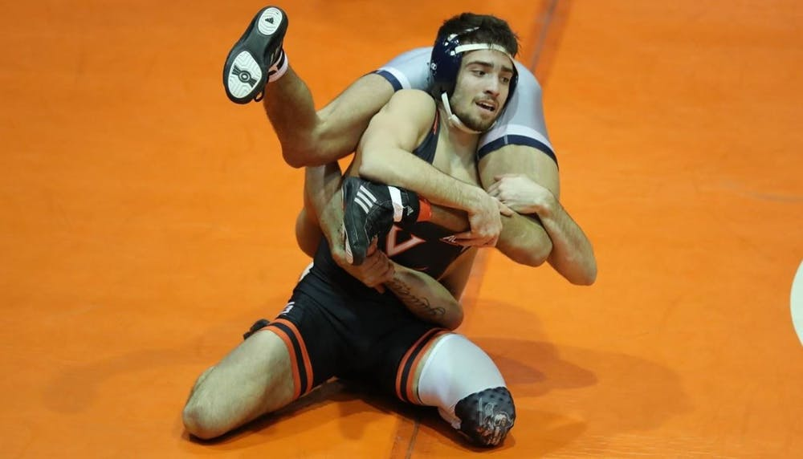

By Chad Whych | 02/17/2020

After nearly an entire month without a dual meet victory, Virginia wrestling’s season was beginning to look dire. Despite starting off the season fluctuating in and out of the NCAA Top 25, the Cavaliers (8-5, 1-3 ACC) began to struggle once conference play began. That being said, Virginia certainly had a tough schedule with its last three opponents all being ranked in the nation’s top 10.
Despite this recent string of losses, Virginia’s wrestlers finally turned it around. They bounced back from the losing streak with a big win over Duke (0-16, 0-4 ACC) at Cameron Indoor Stadium.
The Cavaliers began the meet with intensity, recording bonus-point victories in their first five matches. Even though two of these wins came via forfeit, numerous Cavaliers wrestled well.
The biggest of these victories came from junior Louie Hayes and sophomore Denton Spencer. In the 133-pound weight class, Hayes was able to pin Duke junior Harrison Campbell in under a minute. Spencer recorded a major decision over Duke freshman Wade Unger in their 149-pound bout.
Following these bonus victories, the Blue Devils mounted a comeback effort, recording pins at both the 165- and 174-pound weight classes. However, Virginia would close out the match strong. The Cavaliers won two of the final three matchups to secure the dual.
These wins came from juniors Michael Batista and Jay Aiello. With his win, Aiello pushes his undefeated dual streak to 13 and looks to move up from his current No. 9 national ranking in the 197-pound weight class. Several wrestlers ahead of him have more losses and fewer victories this season.
The dual meet concluded with a 34-15 victory for the Cavaliers. While Virginia entered this meet as the heavy favorite to win, the team still flexed its muscles and showed off its talent. The win also continues the Cavaliers’ dominance over the Blue Devils. Virginia has only lost to Duke once in the last 15 years.
“It feels good to get back on the winning track, but we still have to get better,” Coach Steve Garland said. “We have one last dual, and it’s a big one, before we lock in on the postseason. Let’s honor our seniors next week and send them off right at home.”
The Cavaliers will need to continue getting better on the mat this week, as they are set to take on another ranked ACC opponent in No. 8 North Carolina. Historically, the Cavaliers and the Tar Heels have had several close duals, with the Tar Heels holding a slight 11-10 all-time edge. If Virginia can pull off an upset in Memorial Gymnasium on Senior Night Friday, the Cavaliers could see themselves back in the NCAA ranking before postseason action begins.